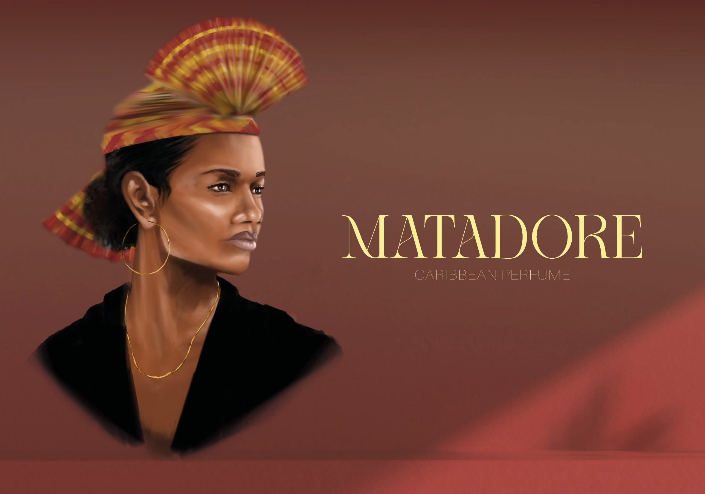
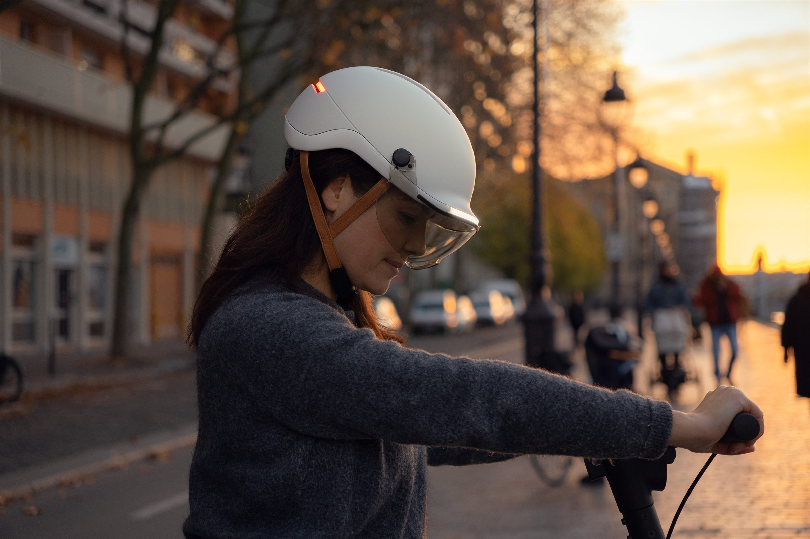
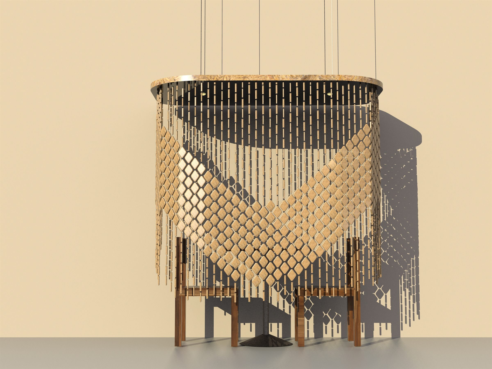

↓Nolhan VELASQUES
Artiste-designer & chercheur · Martinique
Questionner l'héritage antillais pour inventer de nouveaux imaginaires.
Artiste-designer et chercheur martiniquais, j'ai trouvé dans le dessin ma première forme d'expression, avant de me tourner vers le design produit. Après une licence en design d'objet spécialisée en éco-conception, je poursuis aujourd'hui un Master 2 Design – Recherche, Innovation et Développement à Paris.
Ma culture afro-caribéenne constitue l'essence de mes travaux : je questionne mon héritage antillais et ses identités pluriculturelles pour explorer de nouveaux imaginaires postcoloniaux.
Projets
Une sélection de mes travaux de recherche et de design.

CHIVÉ
Laboratoire temporel sur l'histoire, l'esthétique et les récits postcoloniaux du cheveu crépu aux Antilles.

HEIYA
Bouteille en verre pédagogique et sensorielle, pensée comme un rituel. Verallia Design Awards 2026.

MATADORE
Caribbean Perfume : un parfum inspiré de la Matadore antillaise et de sa coiffe en madras.

OVERADE Design
Alternance chez Overade : conception d'objets dans l'univers du vélo.

Plante envahissante
[Courte description du projet.]

BAK-SHOES
Des baskets en bakoua tressé : une fibre végétale martiniquaise comme ressource renouvelable.